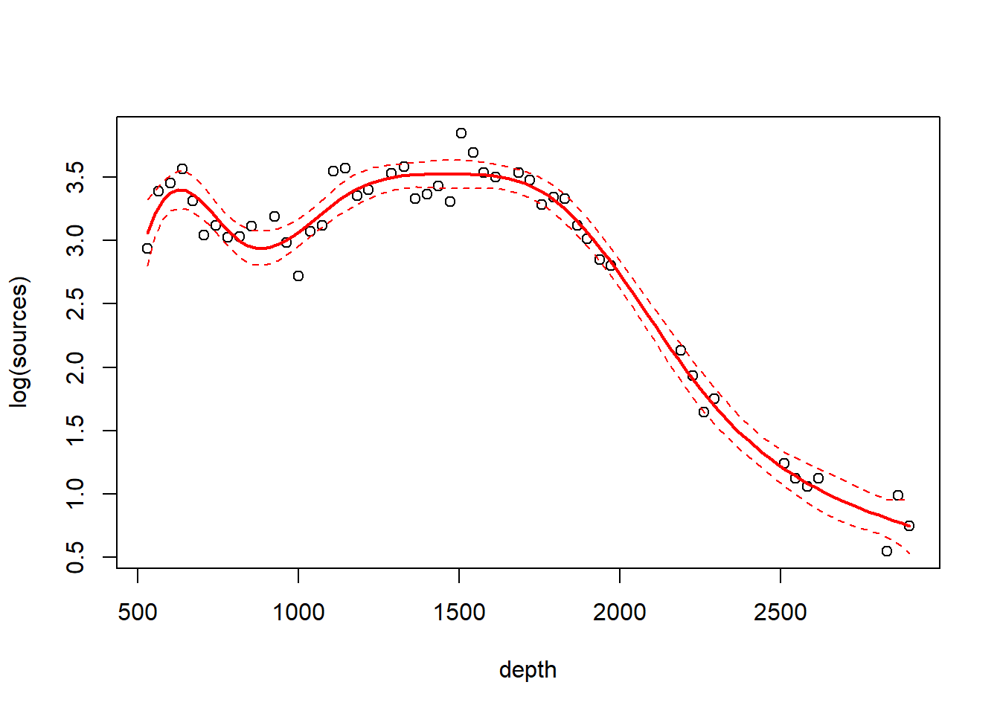
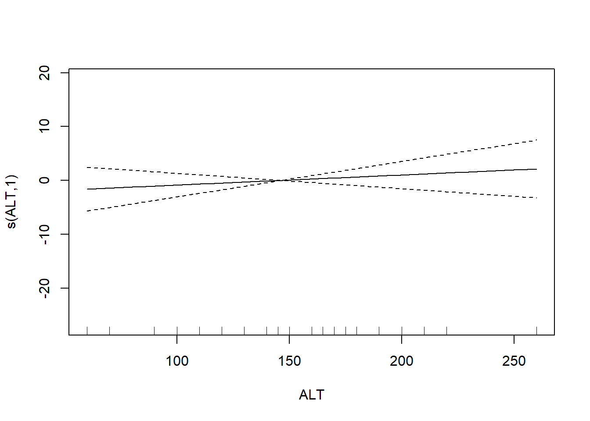
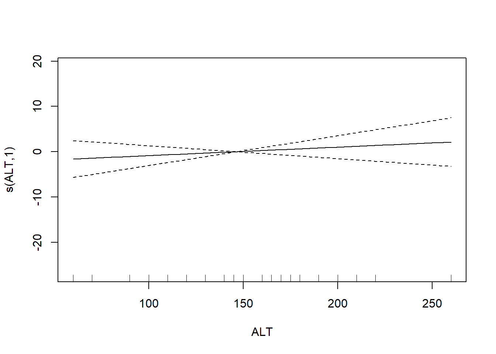
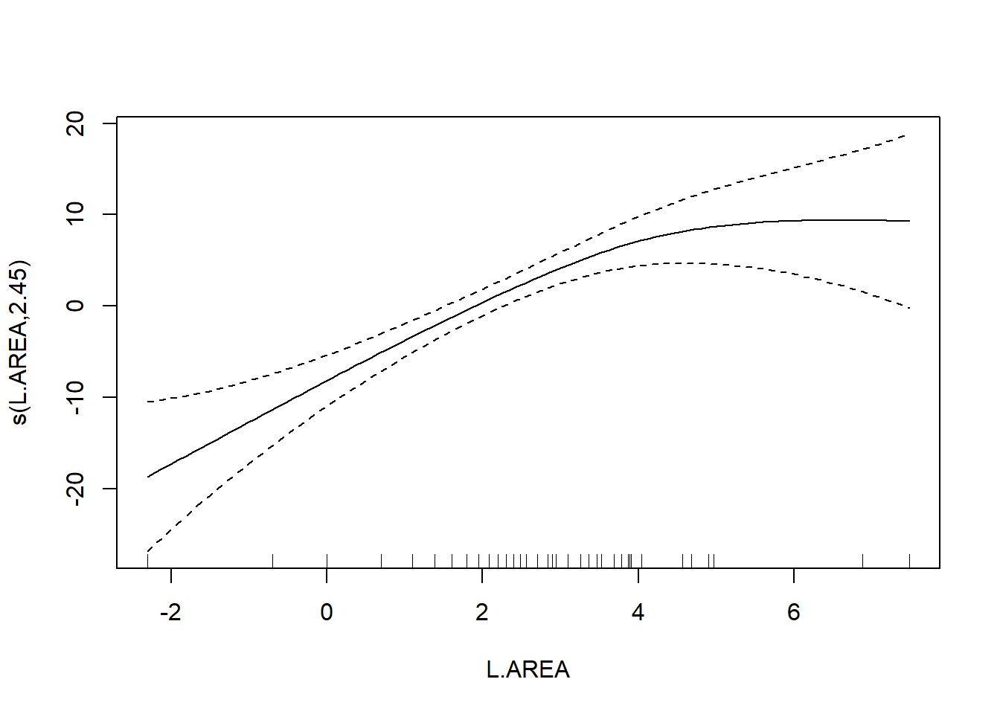

Chapter 4 Smooth regression
4.1 Loess smoothers
We will illustrate LOESS smoothers with the bioluminescence data found in the ISIT data set. These data are featured in Zuur et al. (2009), and can be found by visiting the webpage associated with the book. A link to this webpage appears on the course website. The data were originally reported in Gillibrand et al. (2007), and detail the number of sources of bioluminescence detected along a depth gradient in the North Atlantic. The name of the data set (“ISIT”) refers to the type of camera used in the study.
The methods that we discuss in this chapter allow a flexible specification of how the predictor(s) are associated with the mean response. All of the methods we discuss are variations on regression. As such, they inherent all of the usual regression assumptions about the distribution of the errors, namely, that the errors are iid draws from a Gaussian distribution.
Unfortunately, the bioluminescence data discussed in this chapter violate these assumptions rather severely. We will see right away that the data display the usual non-constant variance that we expect when measuring an ecological abundance, namely, larger responses are also more variable. In addition, because these data are collected at locations along a transect, they are likely characterized by substantial autocorrelation. For the sake of illustration, we ignore both the non-constant variance and the autocorrelation in the analyses that follow. See the discussion of GAMMs to learn about coping with autocorrelation in generalized additive models.
## download the data from the book's website
isit <- read.table("data/ISIT.txt", head = T)
## extract the data from station 16
st16 <- subset(isit, Station == 16)
## retain just the variables that we want, and rename
st16 <- st16[, c("SampleDepth", "Sources")]
names(st16) <- c("depth", "sources")
with(st16, plot(sources ~ depth))
Fit a loess smoother using the factory settings:
## Call:
## loess(formula = sources ~ depth, data = st16)
##
## Number of Observations: 51
## Equivalent Number of Parameters: 4.33
## Residual Standard Error: 4.18
## Trace of smoother matrix: 4.73 (exact)
##
## Control settings:
## span : 0.75
## degree : 2
## family : gaussian
## surface : interpolate cell = 0.2
## normalize: TRUE
## parametric: FALSE
## drop.square: FALSEPlot the fit, this takes a little work
depth.vals <- with(st16, seq(from = min(depth),
to = max(depth),
length = 100))
st16.fit <- predict(object = st16.lo,
newdata = depth.vals,
se = TRUE)
with(st16, plot(sources ~ depth))
lines(x = depth.vals, y = st16.fit$fit, col = "blue")
# add 95% error bars
lines(x = depth.vals,
y = st16.fit$fit + st16.fit$se.fit * qt(p = .975, df = st16.fit$df),
col = "blue",
lty = "dashed")
lines(x = depth.vals,
y = st16.fit$fit - st16.fit$se.fit * qt(p = .975, df = st16.fit$df),
col = "blue",
lty = "dashed")
Examine the residuals:
## [1] "n" "fitted" "residuals" "enp" "s" "one.delta"
## [7] "two.delta" "trace.hat" "divisor" "robust" "pars" "kd"
## [13] "call" "terms" "xnames" "x" "y" "weights"
Let’s look at how changing the span changes the fit. We’ll write a custom function to fit a LOESS curve, and then call the function with various values for the span.
PlotLoessFit <- function(x, y, return.fit = FALSE, ...){
# Caluclates a loess fit with the 'loess' function, and makes a plot
#
# Args:
# x: predictor
# y: response
# return.fit: logical
# ...: Optional arguments to loess
#
# Returns:
# the loess fit
my.lo <- loess(y ~ x, ...)
x.vals <- seq(from = min(x), to = max(x), length = 100)
my.fit <- predict(object = my.lo,
newdata = x.vals,
se = TRUE)
plot(x, y)
lines(x = x.vals, y = my.fit$fit, col = "blue")
lines(x = x.vals,
y = my.fit$fit + my.fit$se.fit * qt(p = .975, df = my.fit$df),
col = "blue",
lty = "dashed")
lines(x = x.vals,
y = my.fit$fit - my.fit$se.fit * qt(p = .975, df = my.fit$df),
col = "blue",
lty = "dashed")
if (return.fit) {
return(my.lo)
}
}Now we’ll call the function several times, each time chanigng the value of the span argument to the loess function:


Let’s try a loess fit with a locally linear regression:

4.2 Splines
We’ll use the gam function in the mgcv package to fit splines and additive models. The name of the package is an acronym for “Mixed GAM Computation Vehicle”. GAM is an acronym for Generalized Additive Model. Warning. I do not understand much of the functionality of mgcv::gam. What follows is my best guess of how the procedure works.
The code below fits a regression spline to the bioluminescence data. Actually, the code fits an additive model with the spline as the only predictor. We will say more about additive models later. For now, we can define an additive model as a type of regression in which the linear effect of the predictor has been replaced by a spline. In other words, in terms of a word equation, the model can be represented as \[ \mbox{response = intercept + spline + error} \]
The s() component of the model formula designates a spline, and specifies details about the particular type of spline to be fit. The fx = TRUE component of the formula indicates that the amount of smoothing is fixed. The default value for the fx argument is fx = FALSE, in which case the amount of smoothing is determined by (generalized) cross-validation. When fx = TRUE, the parameter k determines the dimensionality (degree of flexibility) of the spline. Larger values of k correspond to greater flexibility, and a less smooth fit. For cubic splines, the number of knots is \(k-4\), such that setting \(k=4\) fits a familiar cubic polynomial with no knots. Setting \(k=5\) then fits a cubic regression spline with one knot, etc. I believe that the knots are placed at the empirical quantiles of the data. In other words, a regression spline with one knot places the knot at the median value of the predictor. A regression spline with three knots (\(k=7\)) places the knots at the lower quartile, the median, and the upper quartile of the predictor, and so on.
We’ll fit a cubic regression spline with two knots:
## Loading required package: nlme## This is mgcv 1.9-0. For overview type 'help("mgcv-package")'.st16.rspline <- mgcv::gam(sources ~ s(depth, k = 6, fx = TRUE), data = st16)
plot(st16.rspline, se = TRUE)
Note that the plot includes only the portion of the model attributable to the covariate effect. This is because we have actually fit an additive model (e.g., a GAM).
The plot shows only the spline component, which thus does not include the intercept. To visualize the fit, we’ll need to do a bit more work.
with(st16, plot(sources ~ depth))
st16.fit <- predict(st16.rspline,
newdata = data.frame(depth = depth.vals),
se = TRUE)
lines(x = depth.vals, y = st16.fit$fit)
## use 45 df because the estimate of the residual error is based on 51-6 = 45 df
lines(x = depth.vals, y = st16.fit$fit + qt(0.975, df = 45) * st16.fit$se.fit, lty = "dashed")
lines(x = depth.vals, y = st16.fit$fit + qt(0.025, df = 45) * st16.fit$se.fit, lty = "dashed")
We see that this particular fit is not flexible enough to capture the trend in luminescence at shallow depth.
Let’s take a look at the information produced by a call to summary:
##
## Family: gaussian
## Link function: identity
##
## Formula:
## sources ~ s(depth, k = 6, fx = TRUE)
##
## Parametric coefficients:
## Estimate Std. Error t value Pr(>|t|)
## (Intercept) 12.4771 0.5858 21.3 <2e-16 ***
## ---
## Signif. codes: 0 '***' 0.001 '**' 0.01 '*' 0.05 '.' 0.1 ' ' 1
##
## Approximate significance of smooth terms:
## edf Ref.df F p-value
## s(depth) 5 5 122.6 <2e-16 ***
## ---
## Signif. codes: 0 '***' 0.001 '**' 0.01 '*' 0.05 '.' 0.1 ' ' 1
##
## R-sq.(adj) = 0.924 Deviance explained = 93.2%
## GCV = 19.837 Scale est. = 17.503 n = 51This summary requires a bit more explanation as well. In this GAM, the spline component of the model effectively creates a set of new predictor variables. A cubic regression spline with \(x\) internal knots requires \(x+3\) new regression predictors to fit the spline. In this fit, there are two internal knots, so the spline requires 5 new predictor variables. Because the predictors are determined in advance with regression splines, we can use the usual theory of \(F\)-tests from regression to assess the statistical significance of the spline terms. In the section of the output labeled “Approximate significance of smooth terms”, we see that these 5 predictors together provide a significantly better fit than a model that does not include the spline. This test is exact. It is labeled “approximate” because the default behavior of mgcv::gam is to fit a penalized regression spline, for which the test is indeed only approximate.
Now we’ll fit and plot a penalized regression spline. A penalized regression spline is based on a regression spline with a large number of knots, but the fit is obtained using a penalty that penalizes the “wiggliness” of the fit. When the underlying regression spline is a cubic spline, the wiggliness is defined as the intergral of the squared second derivative of the fit. The most appropriate value for the penalty is determined by (generalized) cross validation. In this way, the penalized regression spline automatically determines the appropriate amount of smoothness. We still have to specify \(k\) to make sure that the initial regression spline has enough flexibility.
st16.spline <- mgcv::gam(sources ~ s(depth, k = 20), data = st16)
plot(st16.spline, se = TRUE) # note that the plot does not include the intercept
Again, we make a plot that includes both the points and the fit
with(st16, plot(sources ~ depth))
st16.fit <- predict(st16.spline,
newdata = data.frame(depth = depth.vals),
se = TRUE)
lines(x = depth.vals, y = st16.fit$fit)
lines(x = depth.vals, y = st16.fit$fit + qt(0.975, df = 51 - 13.41) * st16.fit$se.fit, lty = "dashed")
lines(x = depth.vals, y = st16.fit$fit + qt(0.025, df = 51 - 13.41) * st16.fit$se.fit, lty = "dashed")
Let’s ask for a summary:
##
## Family: gaussian
## Link function: identity
##
## Formula:
## sources ~ s(depth, k = 20)
##
## Parametric coefficients:
## Estimate Std. Error t value Pr(>|t|)
## (Intercept) 12.4771 0.3222 38.73 <2e-16 ***
## ---
## Signif. codes: 0 '***' 0.001 '**' 0.01 '*' 0.05 '.' 0.1 ' ' 1
##
## Approximate significance of smooth terms:
## edf Ref.df F p-value
## s(depth) 12.41 14.31 148.6 <2e-16 ***
## ---
## Signif. codes: 0 '***' 0.001 '**' 0.01 '*' 0.05 '.' 0.1 ' ' 1
##
## R-sq.(adj) = 0.977 Deviance explained = 98.3%
## GCV = 7.1813 Scale est. = 5.2928 n = 51Note the edf component in the “Approximate significance of smooth terms” section. The label edf stands for effective degrees of freedom. We can think of the edf as the effective number of new predictors that have been added to the model to accommodate the spline. For a penalized regression spline, the number and values of the newly created predictors are determined by fitting the model to the data. Because the predictors are calculated in this way, the usual theory of \(F\)-testing does not apply. This is why the \(F\)-test shown for the penalized regression spline is labeled as “approximate”.
Find the AIC for the penalized regression spline fit:
## [1] 242.9773Here’s a small detail. Notice that the syntax of the call to predict is slightly different when making a prediction for a loess object vs. making a prediction for a gam object (which the spline fit is). For a call to predict with a loess object, the new predictor values can be provided in the form of a vector. So, we were able to use
depth.vals <- with(st16, seq(from = min(depth),
to = max(depth),
length = 100))
st16.fit <- predict(object = st16.lo,
newdata = depth.vals,
se = TRUE)However, for a call to predict with a gam object, the new predictor values must be provided in the form of a new data frame, with variable names that match the variables in the gam model. So, to get predicted values for the spline fit, we needed to use the more cumbersome
4.3 Generalized additive models (GAMs)
Generalized additive models replace the usual linear terms that appear in multiple regression models with splines. That is, suppose we seek to model the relationship between a response \(y\) and two predictors, \(x_1\) and \(x_2\). A standard regression model without polynomial effects or interactions would be written as \[ y = \beta_0 + \beta_1 x_1 +\beta_2 x_2 + \varepsilon \] where \(\varepsilon\) is assumed to be an iid Gaussian random variate with variance \(\sigma^2_\varepsilon\). This is an additive model, in the sense that the combined effects of the two predictors equal the sum of their individual effects.
A generalized additive model (GAM) replaces the individual regression terms with splines. Continuing with the generic example, a GAM would instead model the effects of the two predictors as \[ y = \beta_0 + s(x_1) +s(x_2) + \varepsilon \] where \(s(\cdot)\) represents a spline. We continue to assume that, conditional on the covariate effects, the responses are normally distributed with constant variance \(\sigma^2_\varepsilon\).
We will illustrate additive modeling using the bird data found in Appendix A of Zuur et al. (2009). Zuur et al. report that these data originally appeared in Loyn (1987) and were featured in Quinn & Keough (2002)’s text. Zuur et al. describe these data in the following way:
Forest bird densities were measured in 56 forest patches in south-eastern Victoria, Australia. The aim of the study was to relate bird densities to six habitat variables; size of the forest patch, distance to the nearest patch, distance to the nearest larger patch, mean altitude of the patch, year of isolation by clearing, and an index of stock grazing history (1 = light, 5 = intensive).
We first read the data and perform some light exploratory analysis and housekeeping.
## Site ABUND AREA DIST
## Min. : 1.00 Min. : 1.50 Min. : 0.10 Min. : 26.0
## 1st Qu.:14.75 1st Qu.:12.40 1st Qu.: 2.00 1st Qu.: 93.0
## Median :28.50 Median :21.05 Median : 7.50 Median : 234.0
## Mean :28.50 Mean :19.51 Mean : 69.27 Mean : 240.4
## 3rd Qu.:42.25 3rd Qu.:28.30 3rd Qu.: 29.75 3rd Qu.: 333.2
## Max. :56.00 Max. :39.60 Max. :1771.00 Max. :1427.0
## LDIST YR.ISOL GRAZE ALT
## Min. : 26.0 Min. :1890 Min. :1.000 Min. : 60.0
## 1st Qu.: 158.2 1st Qu.:1928 1st Qu.:2.000 1st Qu.:120.0
## Median : 338.5 Median :1962 Median :3.000 Median :140.0
## Mean : 733.3 Mean :1950 Mean :2.982 Mean :146.2
## 3rd Qu.: 913.8 3rd Qu.:1966 3rd Qu.:4.000 3rd Qu.:182.5
## Max. :4426.0 Max. :1976 Max. :5.000 Max. :260.0# get rid of the 'Site' variable; it is redundant with the row label
bird <- bird[, -1]
# log-transform area, distance, ldistance, to remove right-skew
bird$L.AREA <- log(bird$AREA)
bird$L.DIST <- log(bird$DIST)
bird$L.LDIST <- log(bird$LDIST)
# change YR.ISOL to years since isolation (study was published in 1987)
bird$YR.ISOL <- 1987 - bird$YR.ISOL
# keep the only the variables we want
bird <- bird[, c("ABUND", "L.AREA", "L.DIST", "L.LDIST", "YR.ISOL", "ALT", "GRAZE")]
summary(bird)## ABUND L.AREA L.DIST L.LDIST
## Min. : 1.50 Min. :-2.3026 Min. :3.258 Min. :3.258
## 1st Qu.:12.40 1st Qu.: 0.6931 1st Qu.:4.533 1st Qu.:5.064
## Median :21.05 Median : 2.0127 Median :5.455 Median :5.824
## Mean :19.51 Mean : 2.1459 Mean :5.102 Mean :5.859
## 3rd Qu.:28.30 3rd Qu.: 3.3919 3rd Qu.:5.809 3rd Qu.:6.816
## Max. :39.60 Max. : 7.4793 Max. :7.263 Max. :8.395
## YR.ISOL ALT GRAZE
## Min. :11.00 Min. : 60.0 Min. :1.000
## 1st Qu.:21.00 1st Qu.:120.0 1st Qu.:2.000
## Median :24.50 Median :140.0 Median :3.000
## Mean :37.25 Mean :146.2 Mean :2.982
## 3rd Qu.:59.50 3rd Qu.:182.5 3rd Qu.:4.000
## Max. :97.00 Max. :260.0 Max. :5.000Our first attempt at a GAM will use penalized regression splines for all of the continuous predictors in the model. We will use a linear term for GRAZE because there are too few unique values to support a smooth term:
bird.gam1 <- mgcv::gam(ABUND ~ s(L.AREA, k = 10) + s(L.DIST, k = 10) + s(L.LDIST, k = 10) + s(YR.ISOL, k = 10) + GRAZE + s(ALT, k = 10), data = bird)
summary(bird.gam1)##
## Family: gaussian
## Link function: identity
##
## Formula:
## ABUND ~ s(L.AREA, k = 10) + s(L.DIST, k = 10) + s(L.LDIST, k = 10) +
## s(YR.ISOL, k = 10) + GRAZE + s(ALT, k = 10)
##
## Parametric coefficients:
## Estimate Std. Error t value Pr(>|t|)
## (Intercept) 25.4443 2.7798 9.153 9.42e-12 ***
## GRAZE -1.9885 0.8968 -2.217 0.0318 *
## ---
## Signif. codes: 0 '***' 0.001 '**' 0.01 '*' 0.05 '.' 0.1 ' ' 1
##
## Approximate significance of smooth terms:
## edf Ref.df F p-value
## s(L.AREA) 2.446 3.089 12.635 3.98e-06 ***
## s(L.DIST) 3.693 4.559 0.855 0.461
## s(L.LDIST) 1.000 1.000 0.386 0.538
## s(YR.ISOL) 1.814 2.238 1.231 0.262
## s(ALT) 1.000 1.000 0.629 0.432
## ---
## Signif. codes: 0 '***' 0.001 '**' 0.01 '*' 0.05 '.' 0.1 ' ' 1
##
## R-sq.(adj) = 0.72 Deviance explained = 77.6%
## GCV = 40.987 Scale est. = 32.238 n = 56The output reports the partial regression coefficient for the lone quantitative predictor GRAZE, and approximate significance tests for the smooth terms for each of the other predictors. We can visualize these smooth terms with a call to plot:


 

In the interest of time, we take a casual approach to variable selection here. We’ll drop smooth terms that are clearly not significant to obtain:
##
## Family: gaussian
## Link function: identity
##
## Formula:
## ABUND ~ s(L.AREA, k = 10) + GRAZE
##
## Parametric coefficients:
## Estimate Std. Error t value Pr(>|t|)
## (Intercept) 28.400 2.201 12.903 < 2e-16 ***
## GRAZE -2.980 0.686 -4.344 6.56e-05 ***
## ---
## Signif. codes: 0 '***' 0.001 '**' 0.01 '*' 0.05 '.' 0.1 ' ' 1
##
## Approximate significance of smooth terms:
## edf Ref.df F p-value
## s(L.AREA) 2.284 2.903 13.18 3.4e-06 ***
## ---
## Signif. codes: 0 '***' 0.001 '**' 0.01 '*' 0.05 '.' 0.1 ' ' 1
##
## R-sq.(adj) = 0.68 Deviance explained = 69.9%
## GCV = 39.992 Scale est. = 36.932 n = 56Note that the GRAZE variable is currently treated as a numerical predictor. We’ll try fitting a model with GRAZE as a factor. First we’ll create a new variable that treats GRAZE as a factor. We’ll use the summary command to confirm that the new variable fGRAZE is indeed a factor.
## ABUND L.AREA L.DIST L.LDIST
## Min. : 1.50 Min. :-2.3026 Min. :3.258 Min. :3.258
## 1st Qu.:12.40 1st Qu.: 0.6931 1st Qu.:4.533 1st Qu.:5.064
## Median :21.05 Median : 2.0127 Median :5.455 Median :5.824
## Mean :19.51 Mean : 2.1459 Mean :5.102 Mean :5.859
## 3rd Qu.:28.30 3rd Qu.: 3.3919 3rd Qu.:5.809 3rd Qu.:6.816
## Max. :39.60 Max. : 7.4793 Max. :7.263 Max. :8.395
## YR.ISOL ALT GRAZE fGRAZE
## Min. :11.00 Min. : 60.0 Min. :1.000 1:13
## 1st Qu.:21.00 1st Qu.:120.0 1st Qu.:2.000 2: 8
## Median :24.50 Median :140.0 Median :3.000 3:15
## Mean :37.25 Mean :146.2 Mean :2.982 4: 7
## 3rd Qu.:59.50 3rd Qu.:182.5 3rd Qu.:4.000 5:13
## Max. :97.00 Max. :260.0 Max. :5.000Now we’ll proceed to fit the model

##
## Family: gaussian
## Link function: identity
##
## Formula:
## ABUND ~ s(L.AREA, k = 10) + fGRAZE
##
## Parametric coefficients:
## Estimate Std. Error t value Pr(>|t|)
## (Intercept) 22.727275 1.944080 11.691 1.11e-15 ***
## fGRAZE2 0.006623 2.845343 0.002 0.998152
## fGRAZE3 -0.660124 2.585878 -0.255 0.799592
## fGRAZE4 -2.170994 3.050736 -0.712 0.480122
## fGRAZE5 -11.913966 2.872911 -4.147 0.000136 ***
## ---
## Signif. codes: 0 '***' 0.001 '**' 0.01 '*' 0.05 '.' 0.1 ' ' 1
##
## Approximate significance of smooth terms:
## edf Ref.df F p-value
## s(L.AREA) 2.761 3.478 11.67 4.71e-06 ***
## ---
## Signif. codes: 0 '***' 0.001 '**' 0.01 '*' 0.05 '.' 0.1 ' ' 1
##
## R-sq.(adj) = 0.723 Deviance explained = 75.7%
## GCV = 37.013 Scale est. = 31.883 n = 56To formally compare the models with GRAZE as a numerical vs. categorical predictor, we’ll have to use AIC. We can’t use an \(F\)-test here because we have used penalized regression splines to capture the effect of L.AREA. Thus, the models are not nested. (If we had used regression splines for L.AREA, then the models would have been nested.) We can extract the AICs for these models by a simple call to the AIC function.
## [1] 367.1413## [1] 361.9655We can see the contrasts used to incorporate the factor fGRAZE in the model by a call to contrasts:
## 2 3 4 5
## 1 0 0 0 0
## 2 1 0 0 0
## 3 0 1 0 0
## 4 0 0 1 0
## 5 0 0 0 1The output here is somewhat opaque because the levels of fGRAZE are 1, 2, \(\ldots\), 5. The output of the call to contrasts shows each of the newly created indicator variables as a column. For example, the first column shows that the predictor named fGRAZE2 takes the value of 1 when the variable fGRAZE equals 2, and is 0 otherwise.
Fit an additive model with only a smooth effect of L.AREA, in order to show residuals vs. GRAZE:
bird.gam4 <- gam(ABUND ~ s(L.AREA, k = 10), data = bird)
plot(x = bird$GRAZE, y = bird.gam4$residuals)
abline(h = 0, lty = "dashed")
Both the plot and the model output suggest that the effect of grazing is primarily due to lower bird abundance in the most heavily grazed category.
To conclude, we’ll conduct a formal test of whether the model with GRAZE as a factor provides a significantly better fit than the model with a linear effect of GRAZE. In this case, we have to use regression splines for the smooth effect of L.AREA. We’ll use regression “splines” without any internal knots5 because the effect of log area seems to be reasonably well captured by a cubic trend anyway:
bird.gam5 <- gam(ABUND ~ s(L.AREA, k = 4, fx = TRUE) + GRAZE, data = bird)
bird.gam6 <- gam(ABUND ~ s(L.AREA, k = 4, fx = TRUE) + fGRAZE, data = bird)
anova(bird.gam5, bird.gam6, test = "F") ## Analysis of Deviance Table
##
## Model 1: ABUND ~ s(L.AREA, k = 4, fx = TRUE) + GRAZE
## Model 2: ABUND ~ s(L.AREA, k = 4, fx = TRUE) + fGRAZE
## Resid. Df Resid. Dev Df Deviance F Pr(>F)
## 1 51 1869.0
## 2 48 1543.1 3 325.93 3.3796 0.02565 *
## ---
## Signif. codes: 0 '***' 0.001 '**' 0.01 '*' 0.05 '.' 0.1 ' ' 1Both AIC and the \(F\)-test suggest that the model with GRAZE as a factor provides a significantly better fit than the model with a linear effect of GRAZE (\(F_{3,48} = 3.38, p = 0.026\)).
As a final note, Zuur et al. (p.550) observe that “the non-linear L.AREA effect is mainly due to two large patches. It would be useful to sample more of this type of patch in the future.” (Note the rug plots in any of the plots of the area effect above.)
Bibliography
I would have thought that a spline without any internal knots would have been exactly the same as a cubic fit. However, a cubic fit is slightly different, though not by much. I can’t figure out why.↩︎